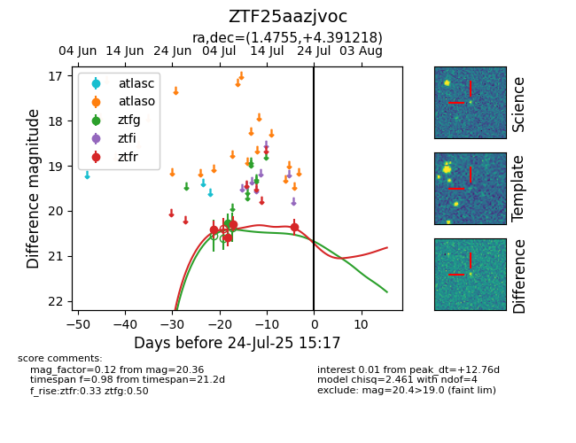

Target ZTF25aazjvoc at 2025-07-24 15:17, see:
FINK: fink-portal.org/ZTF25aazjvoc
Lasair: lasair-ztf.lsst.ac.uk/objects/ZTF25aazjvoc
ALeRCE: alerce.online/object/ZTF25aazjvoc
alt names
ZTF25aazjvoc (ztf,fink)
coordinates:
equatorial (ra, dec) = (1.4755,+4.39122)
galactic (l, b) = (101.9749,-56.61632)
photometry
last ztfg=20.27, ztfr=20.36
1 ztfg, 4 ztfr detections
